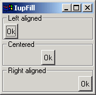

Creates a Fill composition element, which dynamically occupies empty spaces.
Ihandle* IupFill(void); [in C] iup.fill{} -> elem: ihandle [in Lua] fill() [in LED]This function returns the identifier of the created Fill, or NULL if an error occurs.
SIZE: Defines the width, if the Fill is inside a horizontal box, or the height, if it is inside a vertical box. Default: "0".
EXPAND: The default value is "YES", which fills every possible space.
This element is used to maintain the dialog's layout untouched after the user made size changes, and to align the interface elements.
